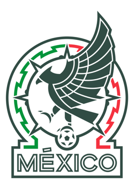
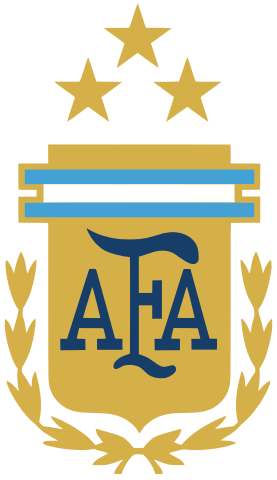

A Copa do Mundo FIFA 2026 será realizada nos Estados Unidos, México e Canadá, sendo a
maior edição da história. Essa copa, diferente das anteriores, terá a presença de 48 países
divididos em 12 grupos com 4 times. Os classificados se enfrentarão no mata-mata até a final.
Abaixo, temos as seleções que representarão o torneio e as seleções mais destacadas para essa copa.
Estados Unidos
O país sede com mais destaque. Irá sediar o torneio pela segunda vez, já sendo palco de
copa em 1994. Eles vão para a Copa pela 12° vez com um elenco de craques como Pulisic,
Weah e Robinson.

México
É o país da América do Norte com tradição histórica em Copas do Mundo. Irá sediar o torneio
pela terceira vez, já sendo palco de Copa em 1970 e em 1986. O país irá para a sua 17° copa,
com Ochoa, Raúl Jimenez e Álvares.
Canadá
A seleção mais fraca, mas que sempre entrega surpresas, principalmente agora que irá ser
sede junto de seus vizinhos norte-americanos. É a primeira vez que eles receberão o
torneio em casa. Eles irão para a sua 3° copa, com Aphonso Davies, Jonathan David e
Eustáquio.

Brasil
A seleção brasileira é a maior campeã da história das Copas do Mundo, com 5 títulos.
O Brasil chega para 2026 buscando recuperar o protagonismo mundial em busca do Hexa, com um
recorde imbatível de participação tem todas as copas. O Brasil conta com craques como
Vinícius Jr, Neymar Jr e Endrick.

Argentina
Atual campeã do mundo, a Argentina chega como uma das favoritas para a Copa de 2026.
A equipe já venceu 3 copas no total e mantém uma geração talentosa para a sua 18° copa com
jogadores como Julián Álvarez, Enzo Fernández e Lionel Messi.

Portugal
Portugal possui uma das seleções mais técnicas e favoritas ao título. A equipe europeia vai
para a Copa pela 9° vez com estrelas como Bernardo Silva, Cristiano Ronaldo e Rafael Leão.